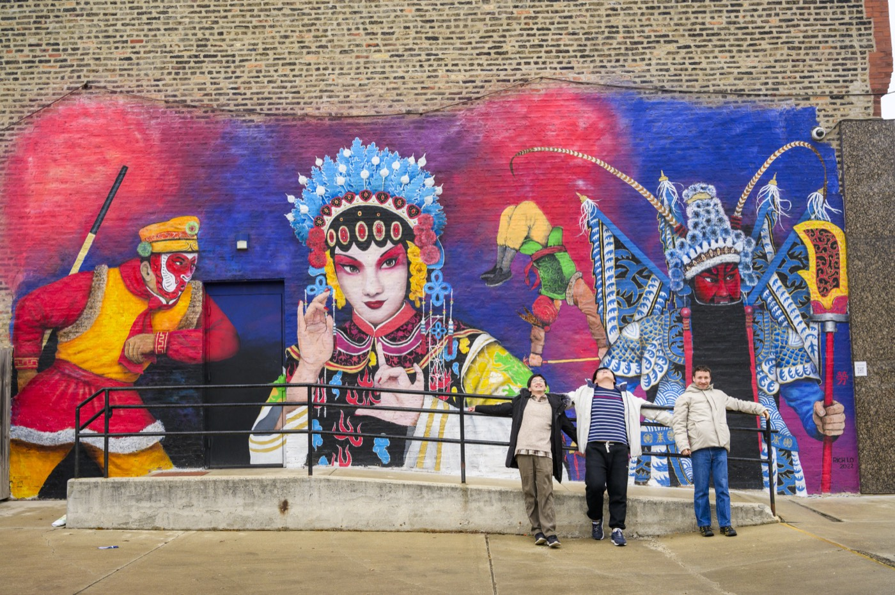
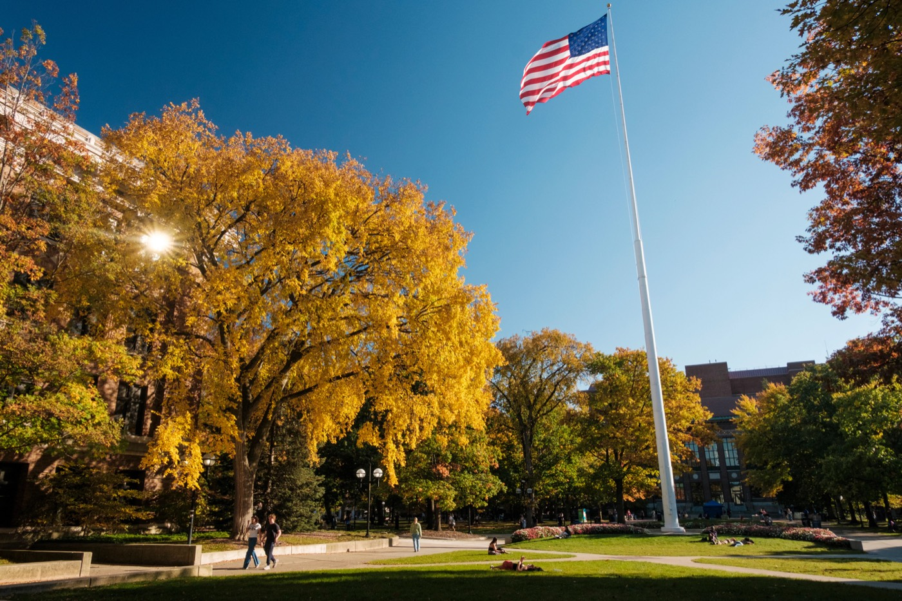

Social & Community Awareness
Examine your personal identity, privilege, and relationship to the communities with which you will work. Use civic engagement frameworks to better understand the context of your project.

Transform your academic foundation into real-world impact. The UMSI Engaged Learning Office (ELO) guides you through the crucial early stages of project work—from self-reflection and community context to team charters and initial client kickoff.
Engaged learning differs from a traditional academic assignment. Instead of working within a clearly defined classroom scenario, students may enter complex and unscripted ecosystems where technical solutions intersect with human lives, organizational cultures, and community needs.
The preparation phase is therefore about more than simply getting ready to complete a project. It is an opportunity to build the foundation for ethical, sustainable, and mutually beneficial engagement.
Before beginning the work, take time to reflect on your positionality, understand the context surrounding your partner or community, audit your team's skills, and listen carefully to partner goals.
Building mutual respect, establishing boundaries, and creating clear communication expectations from Day 1 can help create a more reciprocal partnership.

Preparation creates a strong foundation for your engaged learning experience. This phase focuses on understanding community context, reflecting on your own identity and assumptions, and making sure your team is ready for the responsibilities ahead.
Approach your partner or community as a collaborative learner rather than assuming the role of an outside expert. Ethical humility can help you avoid assumptions, misaligned expectations, and unintended harm.

Examine your personal identity, privilege, and relationship to the communities with which you will work. Use civic engagement frameworks to better understand the context of your project.

Understand program requirements, project commitments, leadership responsibilities, and what is expected of each member of your team.
Assess organizational needs and determine whether the initial project idea is realistic and appropriate for the available time, resources, and team capacity.
Use these questions to help your team think critically about the experience before beginning project work.
Engaged learning asks students to work with people and organizations rather than simply completing a project for them. This means listening carefully and recognizing that partners and communities have knowledge that is essential to understanding the problem.
Instead of entering the experience as an outside expert, approach the relationship with curiosity, respect, and ethical humility.
Use the following sequence to organize your preparation. You do not need to have every answer immediately, but working through these areas can help your team begin with a clearer understanding of the experience.
Before moving into the active project, make sure your team has discussed the following areas.
Use these resources to reflect on your role, understand community engagement, clarify expectations, and develop a realistic project plan.
A diagnostic activity that can help you reflect on your social identity and positionality before entering an engaged learning experience.
Use this checklist to examine assumptions and consider your ethical readiness for community engagement.
A framework for thinking about community involvement and decision-making power throughout an engagement.
Use this resource to translate partner needs into realistic goals and clarify the scope of your project.
Review roles, expectations, and commitments associated with student organization and project leadership.
A formal agreement that helps clarify project manager responsibilities and commitments.
Use this worksheet to organize project scope, objectives, team roles, and timelines. It can also be shared with your client or partner.
You do not need to complete every resource at once. Choose resources based on what your team needs at this stage of the experience.

Preparation is not about having every detail figured out before your project begins. It is about entering the experience with enough awareness, communication, and structure to learn responsibly.
Your understanding of the project will continue to change once you begin working with your partner. Be prepared to listen, ask questions, revisit assumptions, and adjust your plans as you learn more.
Once your team has established a foundation, move into the next stage: building the relationship, communicating with your partner, and starting the project.